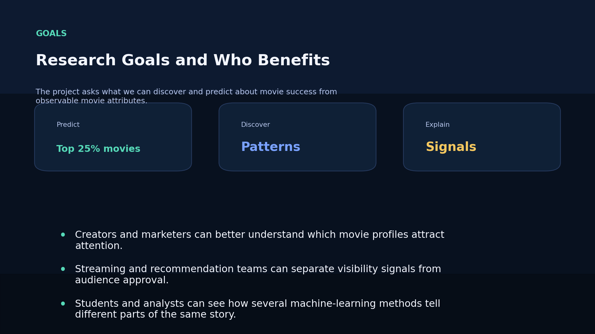
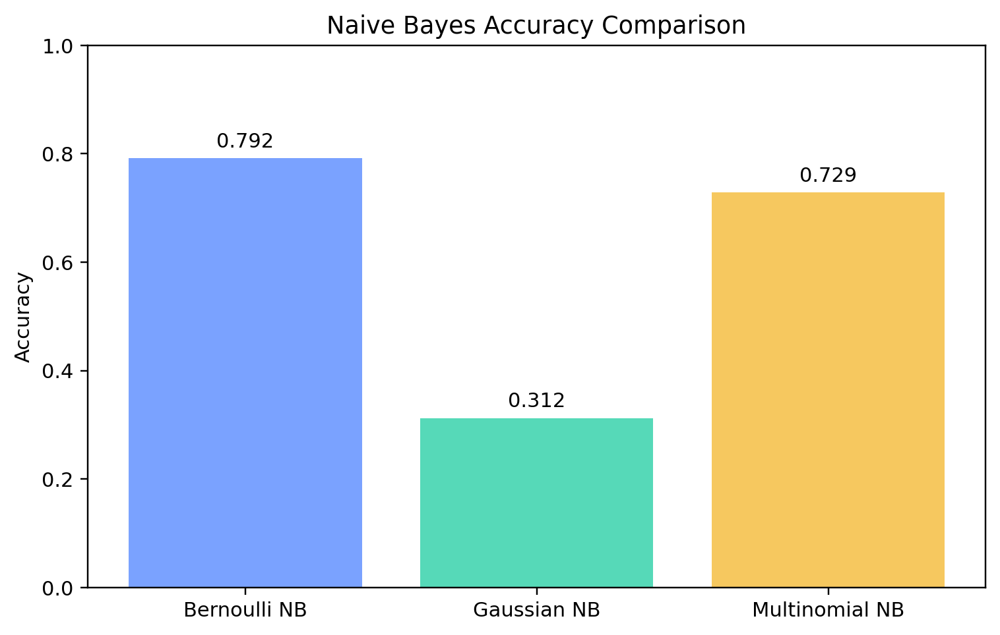

What Makes a Movie Successful?
Core Question
Why do some movies become highly visible while others earn strong approval without the same level of attention?
Main Takeaway
The strongest patterns in this project show that attention, timing, scale, and audience response all matter, but they do not influence success in the same way.
Movie Success Is More Than One Thing
Movie success is more complicated than just asking whether a movie is good or bad. A movie can be successful because many people are talking about it, because audiences rate it highly, or because it combines both attention and approval.
Looking at popularity and ratings together gives a fuller picture of how movies perform in the real world.
A movie can be popular without being the highest-rated, and highly rated without being the most visible.
Popularity vs Rating

Why This Topic Matters
How much public attention a movie receives.
How strongly viewers respond through ratings and votes.
How timing, genre, and scale shape those outcomes.
Movies are influenced by genre, release timing, audience expectations, marketing, and financial scale. This project studies several signals together so that the final picture is more realistic and more useful.
Project Goals
- Predict whether a movie belongs to the top 25 percent of popularity.
- Discover patterns connecting genres, timing, budget, revenue, runtime, and audience response.
- Explain those findings in a way that is useful beyond a technical audience.
Why It Matters
This kind of information can help marketers, content planners, streaming platforms, and recommendation systems better understand how movie traits connect to audience attention.
Project Focus

Data Source
The data came from TMDB. The raw movie records included titles, release dates, popularity, vote averages, vote counts, and IDs. These records were then enriched with details such as runtime, revenue, budget, and genres.
The final dataset gave a consistent foundation for visual analysis, pattern discovery, and supervised prediction.
Clean Dataset Preview

First Major Finding
One of the clearest early findings was that popularity and ratings do not tell the same story. Some movies receive high attention without being the highest-rated, while some highly rated movies are less visible.
This shows that success should not be measured in only one way. A movie can succeed through public visibility, through stronger audience approval, or through a mix of both.
Interpretation
Attention and approval are related, but they are not interchangeable.
Rating Distribution

Movie Profiles with PCA and Clustering
PCA and clustering helped reduce the complexity of the dataset and organize movies into broader profiles. Two components retained 67.4 percent of the variation, and three components retained 82.22 percent.
This means the movie dataset has meaningful structure even before prediction models are applied. The movies do not behave like random points; they form broader numeric profiles.
67.40%
82.22%
5 components
PCA View

Association Rules: What Patterns Repeated?
The support results showed several repeated patterns. Movies outside the top-popularity group were often non-summer releases, with support around 0.60. Lower-rated movies were also strongly associated with non-summer release timing.
The clearest financial pattern was that high-budget movies frequently matched high-revenue movies, with confidence about 0.88 and lift about 1.73. Low-budget movies similarly matched low-revenue movies, with confidence about 0.86 and lift about 1.76.
Another pattern was that low-budget movies were more likely to fall outside the top-popularity group. That suggests scale and visibility were connected, but not in a simple one-direction way.
What This Means
The rule mining results suggest that release timing, budget level, and revenue level were some of the most consistent combinations in the dataset, especially among movies that were not in the most popular group.
Rule Network

What the Classifiers Actually Learned
The best Naive Bayes model was Bernoulli Naive Bayes, with accuracy 0.7917. That is an important result because Bernoulli Naive Bayes uses simple yes-or-no features. In other words, the model worked best when movies were described by presence or absence signals such as budget group, revenue group, release timing group, and genre membership.
That suggests the top-popularity label in this dataset was better explained by broad category-style signals than by assuming smooth continuous numeric patterns. Gaussian Naive Bayes performed badly, with accuracy 0.3125, which means the continuous Gaussian assumption was not a good fit here.
So the key result is not just that one model was more accurate. The key result is that popularity was easier to separate when movies were represented as high versus low style indicators.
Naive Bayes Comparison

Decision Tree and Logistic Regression Results
The best Decision Tree reached 0.7917 accuracy and its root split was vote_count. That means audience engagement was the single most useful first split for separating top-popularity movies from the rest. The other trees also used release_year and release_month as root nodes, which shows that timing signals were also important.
Logistic regression reached 0.7292 accuracy. Its strongest positive coefficients were release_year, budget, Adventure, Drama, Crime, Action, and vote_average. In practical terms, that means newer releases, larger budgets, and certain genres were associated with a higher chance of landing in the top-popularity class.
Interestingly, vote_count had a negative logistic coefficient in this snapshot. That suggests current popularity is not the same thing as total accumulated audience voting, which is a useful reminder that visibility can be short-term and dynamic.
0.7917
vote_count
newer release year
Model Comparison

What the Results Mean in Practice
Release year and release month mattered repeatedly, which suggests recency and timing strongly shape attention.
High-budget movies were strongly linked to high revenue and were less likely to sit in the lower-visibility group.
Ratings and popularity were connected, but they were not the same thing, and some models separated them differently.
Together, these results suggest that movie success is a mix of visibility, timing, scale, and audience response. The project does not support one single formula for success. Instead, it shows that different kinds of success signals interact with each other.
Non-Technical Conclusions
- Movie success is not one number.
- Popularity and ratings tell related but different stories.
- Release timing and audience engagement were some of the clearest signals behind visibility.
- Financial scale mattered, but it did not automatically guarantee stronger audience approval.
- The most useful findings were the ones that could explain what kind of movie tends to become visible and why.
The biggest lesson is that movie success has several sides, and the best analysis explains those sides instead of collapsing them into one score.
Release Timing

Closing Message
A movie becomes successful through more than quality alone. Attention, timing, audience behavior, genre expectations, and market context all work together.
This project used multiple machine learning methods to study movie success from different angles. The most valuable result was not only a prediction score. It was the discovery that timing, engagement, budget, and genre each explained different pieces of how movies become visible and successful.